За черникой на Мамай
-16-17 августа 2008 -
Из серии "Мемуары. Лето-2008"
Юля и Саша - мои двоюродные братья и сестры из Ангарска, традиционно
гостили в Выдрино и были торжественно приглашены прогуляться на Мамай
за черникой. По такому случаю выдал Саше рюкзак, спальники и коврики,
еще взяли ведра и совки, и что-то еще непонятного набрали, потому что
я на свой рюкзак на фото недавно посмотрел и очень удивился его размеру
:))) А Юля как обычно - с маленьким рюкзачком и как на парад :)
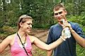
. 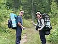
. 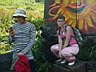
. 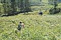
.
Гламурмая "блондинка"
до похода и после :)
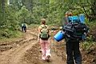
. 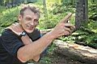
. 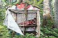
. 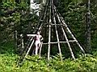
По дороге нас обогнали два велосипедиста - основатель бурятского экстрима
Сергей Климов со товарищем. По словам Сергея, сегодня будет избрано место
для новой мамайской резиденции и заложено первое бревно в фундамент улан-удэнского
мега-зимовья. Потому как федерация растет и байкальским экстрималам в
чумах уже тесновато.
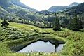
. 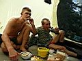
В самый зной, нещадно кусаемые противной мошкарой, дошли мы до чудного
озера. Искупались, развели дымокурный костер. А потом и место под палатку
нашли возле другого озера, их там два, недалеко друг от друга. Сварили
знатный обед и отобедали прямо в палатке. Хоть в палатке и жарко, зато
мошкара не достает. Мошкары в этом году просто пипец как много, успокаевается
только к вечеру, а днем надо от нее или в дыму костра спасаться, или в
палатке сидеть, или быстро куда-нибудь идти...
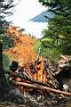
. 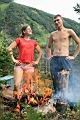
.
"А давай-ка, Юля, мы тебя на костре зажарим!"
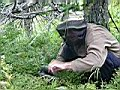
. 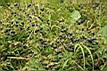
. 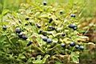
. 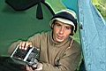
В связи с засильем мелкого гнуса на добычу черники вышел только я один.
Ягоды недалече от палатки вполне на ведро хватает, правда много мелкой.
Молодежь батонила в палатке и варила ужин :)
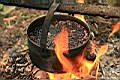 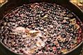
.
. 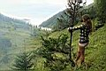 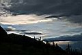
Вечером еще варили компот из черники, м-м-м... и прогулялись вдоль речки.
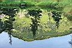
. 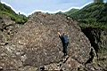
. 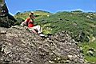
. 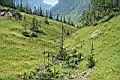
До обеда была экскурсия на перевал.
По дороге лазали на камни, отмашивались от мошки и собирали чернику.
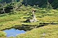
. 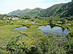
. 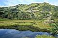
На заболоченном предперевальном участке много
маленьких озер.
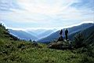
- 
С перевала отличный вид на долину р.Выдринной.
На перевале красиво, ягоды много, но мошкары еще больше. Так что там
особо не рассиживались и вернулись в лагерь. Пора уже и домой собираться.
Юля предложила пойти не по тропе (которая густо заросла папоротником),
а вдоль речки, наивно полагая, что камни, кусты и трава - лучшая альтернатива.
Спасибо, помучались :) Зашли на озеро Ганг. Ходят упорные слухи, что скоро
на этом чудном озере москали построят базу отдыха. Так что успевайте,
люди добрые, купайтесь в целебных водах Ганга...
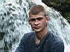
. 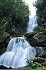
. 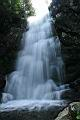
. 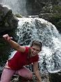
.
Ну и не обошли вниманием красивый мамайский водопадец,
которому так и не придумано подходящее название...
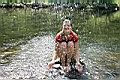
Юля от мошкары отбрызгивается :)
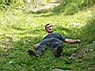
Саша устал :)
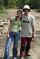
. 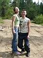
Последние снимки на память и отъезжаем на электричке,
Юля и Саша в Выдрино, а я в Слюдянку.
В рюкзаке - полтора ведра черники :)
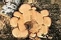
. 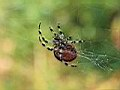
Симпатичный пенек и паучек.
Фото - Лёха Слюдянский, Саша и Юля Савинские (Август2008)
Комментарии - Лёха Слюдянский (Март 2009)
|